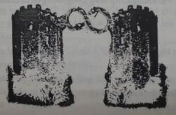

Ánh trăng rằm soi tỏa trên cửa đông. Không như Cổng Vỡ ở bờ tây thung lũng, cánh cổng này vẫn còn nguyên vẹn. Một bức tượng đá uốn quanh cổng vào, đen sì và như báo trước điềm gở. Đó là bức tượng một con rắn hai đầu uốn lượn, một đầu chỉ về phương nam, một đầu hướng về phương bắc. Jake đã từng thấy hình bức tượng một lần trong bức vẽ ở thư phòng thầy Balam và một lần là một phiên bản thu nhỏ bằng vàng ở Bảo tàng Anh quốc.
Jake hối hả băng qua con đường mòn, đi theo nữ trinh sát người La Mã và một chiến binh khổng lồ người Ưr tên là Kopat. Marika theo sát sau Jake, cùng với Pindor và Bach’uuk. Theo sau họ là một hàng dài những chiến binh Ưr, tất cả đều lăm lăm vũ khí trong tay: giáo mác, rìu đá, mấy cái bẫy thú thô sơ làm bằng mấy hòn đá buộc trên đầu dây da.
Jake đi vòng qua một đống đất đá chất cao tới vai chắn ngang đường đi. Đằng trước mặt, một nhóm kị binh phục trong một con hào bên đường, rõ ràng là đang căng thẳng. Đám kị binh tụm lại với đám thú của mình. Những kị binh đều ở tuổi thanh thiếu niên, có lẽ chỉ lớn hơn Jake vài tuổi. Nỗi sợ hãi khiến họ dường như còn có vẻ nhỏ bé hơn.
Kopat bước qua một bên, triệu tập những người Ur lại. Nữ trinh sát La Mã dẫn Jake và mấy đứa kia lại chỗ đội binh của chị. “Chỉ huy Portius đâu?” Một kị binh lên tiếng hỏi.
Nữ trinh sát trả lời bằng giọng đều đều, “Chân ngài ấy đã gãy. Ngài ấy không thể chiến đấu được. Người Ưr đã chăm sóc cho ngài.” “Vậy ai sẽ chỉ huy chúng ta?” Một người khác hỏi. Dường như anh ta chẳng hi vọng gì ở lực lượng của Kopat với những vũ khí thô sơ của họ. Như nhiều người Calypsos, anh ta không tin là người Ưr có thể làm được bất cứ việc gì trừ công việc hầu hạ.
Cô gái La Mã quay sang Pindor. “Vì chỉ huy Portius đã bị thương, chúng ta có một con kị long trống ở đây.”
Hàng kị binh xôn xao. ‘'Đó là con trai của Trưởng lão Tiberius...” “Không, không phải Heron... thằng nhóc kia...”
“Chúng ta bị nguyền rủa rồi...”
Pindor vờ không nghe thấỵ gì.
Cô gái băng lại chỗ một con kị long trông rất đáng sợ, một vết sẹo khủng khiếp che mù một mắt nó. Con kị long đứng vượt lên trên mấy con khác, nó đá đá một cục đất bùn.
Jake lùi lại. Nếu đây là con kị long của chỉ huy thì ông gãy chân cũng không có gì là lạ. Mặc dù trong bóng tối, vẻ kinh sợ trên mặt Pindor vẫn rõ là dễ nhận ra.
Cậu chưa kịp phản ứng gì - chưa kịp lại gần hay né xa kị long mất chủ - thì bỗng sau lưng họ vang lên một tiếng tù và. Tiếng ù ù trầm trầm của nó làm răng Jake va lập cập.
Jake quay lại, thấy những người Ur đã tập hợp lại ở con đường mòn bên dưới. Chỉ có hơn năm mươi người. Thế cũng là đông, nhưng chỉ là một phần rất nhỏ của ngôi làng người Ur.
Những người kia đâu rồi?
Kopat đứng dạng chân trên một tảng đá, trên môi ông là một thứ vỏ gì đó cong cong. Ông thổi thêm một lần nữa, tiếng tù và ngân dài như vọng lên tận cung trăng một tiếng gọi ai oán.
Và rồi có tiếng trả lởi.
Phía khu rừng già vang lên một tiếng tù và khác. Từ tán rừng rậm, một cái đầu rắn khổng lồ nhô lên giữa những tàn cây, tắm đầy trong ánh trăng. Nó vươn thẳng đến một độ cao cũng phải tương đương một tòa nhà mười tầng. Jake nhận ra cái cổ dài và cái đầu bè bè của nó. Đó là một con brontosaurus, loài khủng long lớn nhất trong miền đất của những con khủng long khổng lồ. Nó nặng nề cất bước tiến lại gần.
Ở khu rừng phía sau, lại một cái đầu khác ngóc lên... một cái nữa... và một cái nữa. Những cái đầu brontosaurus nhô lên khỏi khu rừng như những bông hoa bồ công anh vươn lên khỏi bãi cỏ mịn. Bảy con brontosaurus! Tất cả đều đang tiến tới. Con đầu tiên ở gần nhất đã băng qua khu rừng thấp; nặng nề tiến lại con đường mòn dẫn vào cửa.
Những chiến binh người Ưr cưỡi trên cái lưng dài ngoẵng của con vật, vắt vẻo trên bộ yên cương nối lại thành một dây bên sườn. Giống mấy con ve bám trên con chó. Một chiến binh can trường trụ ở yên cương nằm ngay sau đầu con vật; người lắc lư theo nhịp bước của con brontosaurus. Mấy con brontosaurus bước theo sau, trên người chúng cũng “kí sinh” đầy đủ những chiến binh người Ưr như vậy.
Cô gái La Mã thét gọi những kị binh của mình, “Tiến lên!”
Vài người tuân theo lời hiệu triệu, nhưng những người khác trông có vẻ không chắc chắn lắm - họ sợ phải xông trở lại vào thung lũng.
Marika kéo Pindor và Jake qua một bên.
“Mấy bạn có tin nổi điều tụi mình đang chứng kiến không chứ?” Pindor bật ra, nó vẫn còn chăm chăm nhìn theo mấy con brontosaurus lặc lè tiến bước.
Marika kéo đám bạn ra xa thêm một chút. “Cuộc tấn công bất ngờ hẳn sẽ làm hàng ngũ grakyl hỗn loạn, nhưng được bao lâu chứ? Chúa Sọ còn có những con quái vật dáng sợ dưới trướng. Khủng khiếp hơn lũ grakyl.”
“Nhưng chúng ta có thể làm gì khác đây?” Pindor hỏi.
Marika nhìn Jake. “Hi vọng duy nhất, để thực sự giành được phần thắng trong cuộc chiến này, là khôi phục lại màn chắn của ngôi đến. Không có nó, chúng ta chỉ có tiêu vong mà thôi.”
Jake hình dung ra khối ngọc lục bảo sẫm lại vì bị bóng tối xâm nhập vào, hủy hoại từ bên trong. “Nhưng bằng cách nào?”
“Khooa-hoọc của bạn có cứu được khối ngọc không? Có thể xua bóng tối ra khỏi tâm khối ngọc được không? Bạn không thể triệu tập quyền năng doòng-điiện được hả?”
Jake lắc đầu. “Tớ không còn cục pin nào. Không có cách nào tạo ra điện được. Mà dù có tạo được thì tớ cũng không chắc là nó có thể cứu được khối ngọc lục bảo ấy.”
Nói là nói vậy nhưng Jake vẫn không bỏ cuộc. Cậu điểm qua tất cả những cách khả dĩ để tạo ra điện: gió, hơi nước, than đá, địa nhiệt, mặt trời. Tất cả những thứ đó đều vượt quá khả năng và rõ ràng là vượt quá xa trình độ kĩ thuật ở đây.
Phải có lời giải đáp nào đó chứ. Cậu đưa tay lên túi áo, sờ tay vào chiếc đồng hồ. Nếu có cha ở đây, hẳn là cha sẽ biết phải làm gì. Nhưng mà giờ cha đâu có ở đây.
Những ngón tay của Jake siết chặt quanh cái vỏ vàng bên ngoài của đồng hồ. Có thể nào cha mẹ cậu vẫn con sống không? Jake không có cách nào để khám phá ra được, cậu chỉ biết là trước mắt cậu phải cố tìm cho ra một lời giải đáp.
“Hẳn là phải có cách xua bóng đêm ra khỏi khối ngọc thạch chứ,” Marika lặp lại.
Jake không để tâm đến lời của nhỏ, nhưng những lời đó đã chạm được vào tâm trí cậu. Chúng trôi lên bề mặt trí não - xua bóng đêm ra - trong khi cùng lúc đó, tâm trí cậu vẫn xoay quanh mọi cách để tạo ra điện.
Than, gió, hơi nước, năng lượng hạt nhân...
Rồi bỗng cậu bật ra. Cậu sững lại một lúc, đủ lâu để Marika nhận thấy.
“Jake, gì vậy?”
Cậu sợ chỉ cần nói ra thì sẽ đứt mất dòng suy nghĩ. Cậu điểm lại ý tưởng một lần nữa trong đầu. Cậu nghĩ tới những cái vòng đồng trên cây quyền trượng của mấy trưởng lão người Ur, cậu nghĩ tới những ánh phản chiếu lấp lánh ở bức bích họa trên tường. Cậu phải nhắm mắt lại mới dược.
“Jake?” Marika khẩn khoản.
Cậu tính toán xem phải cần gì... đường xiên, góc độ, khoảng cách.
“Sẽ cần cả ba chúng ta”, Jake lớn giọng kết luận.
“Cái gì cần mới được?” Pindor hỏi.
Jake quay sang mấy đứa bạn. “Chúng ta phải trở lại kim tự tháp.”
Lúc này Bach’uuk đã tới nhập bọn. Nãy giờ nó bận ngắm đồng bào nó xung phong tiến vào thành, mắt lấp lánh tự hào.
“Bach’uuk, cậu có thể dẫn bọn mình trở lại đền được không?”
Nó gật đầu, “Nếu các anh chị muốn.”
“Trước khi lên đường,"’ Jake nói thêm “chúng ta cần phải có một bộ áo giáp."
Marika chụp lấy tay cậu. “Jake, bạn đang mưu tính chuyện gì vậy? Bạn có cách cứu khối lục ngọc rồi phải không?”
“Có thể."
Đây gần như là một trò thử vận may, nhưng nếu Jake đúng, chuyện này sẽ giải thích được tại sao Kalverum Rex phải chờ đến tận đêm khuya mới bố trí cuộc tấn công. Chúa Sọ không hề chơi trò may rủi.
"Bạn chữa bằng cách nào?” Pindor hỏi. “Bằng cái gì?"
"Bằng nguồn năng lượng cổ xưa và vĩ đại nhất của thế giới,” Jake trả lời.
Khi Jake trình bày kế hoạch, ánh mắt Pindor sáng lên một chút “Bạn có nghĩ kế hoạch sẽ thành công không?” Marika hỏi.
Jake thấy chẳng có lý do gì để nói dối. “Tớ không biết".
“Lỡ như kế hoạch thất bại thì sao? Lỡ như cậu sai?"
“Thì chúng ta sẽ tiêu.” Jake nhún vai. “Nhưng mà như cậu đã nói rồi đó, Mari, đằng nào thì chúng ta cũng tiêu rồi.”
“Nè, nè, hai bạn dẹp đi, đừng nói chữ tiêu nữa được không hả?" Pindor càu nhàu, nhìn nó có vẻ không ổn lắm.
Jake lên tiếng, “Có ai có kế hoạch hay hơn không nào?"
Không ai lên tiếng.
Jake bắt đầu giảng giải chi tiết, nhưng Pindor đã ngắt ngang. “Cái điều bạn đang toan tính đó... nó đòi hỏi một thời điểm chuẩn xác đúng không?"
Jake gật đầu.
"... vậy chắc đánh lạc hướng cũng giúp được phần nào", Pindor nói thêm.
Jake chưa kịp trả lời gì thì Pindor đã đưa mắt nhìn nhóm kỵ binh đang miễn cưỡng leo lên yên mấy con kỵ long. Trông họ vừa có vẻ hi vọng sau đợt xung phong viện trợ của người Ur vừa có vẻ tuyệt vọng sau những gì họ đã phải đối mặt ở Calypsos.
Pindor nói mà không ngoảnh đầu lại. “Jake, bạn nói cần ba người trong chúng ta. Cứ để Bach’uuk thế chỗ tớ được không?”
Marika chạm vào khuỷu tay Pindor. “Pin, chúng tớ cần bạn cơ.”
Pindor bước đi. “Mấy bạn cần ba người. Đâu nhất thiết phải là tớ. Phải không Jake?”
Jake nghe trong giọng nói của cậu bạn một tia căng thẳng. Jake biết không phải bạn cậu sợ, mà là đang quyết tâm. Pindor không hề né tránh nhiệm vụ nguy hiểm này. Nó muốn ném mình vào nơi nguy nan hơn.
“Chỉ cần ba người là được rồi,” Jake trả lời.
Pindor gật đầu. Nó giữ chặt lấy cái còi Jake đã đưa cho nó như thể cái còi là một lá bùa may mắn vậy rồi băng lại chỗ kị binh.
“Pin!” Marika gào lên.
Jake giữ khuỷu tay Marika. “Cậu ấy biết phải làm gì mà.” Jake vẫn nhớ tài chiến lược của Pindor. Chính Pindor đã chỉ ra điểm yếu trong kế hoạch của Jake và tìm cách loại bỏ điểm đó đi. Thời điểm chính xác quyết định thành bại của kế hoạch này. Và một chiêu bài đánh lạc hướng vào đúng lúc có thể chính là điểm khác biệt giữa thành và bại.
“Hãy nghe tiếng tù và hiệu!” Pindor nói vói lại.
Cô gái La Mã vẫn đang tìm cách kiểm soát con kị long sẹo to tướng, những kị binh khác thì đã yên cương sẵn sàng cả rồi. Pindor bước đến trước mặt con thú ương bướng, sau lưng nó vang lên một vài tiếng khịt mũi khinh thị cố tình.
Con kị long giậm một chân, hùng hổ bước lại, định giẫm bẹp chân Pindor. Nhưng Pindor không hề nao núng. Thay vào đó, nó đưa tay đặt lên vùng da cổ nhăn nheo của con kị long. Tay kia nó nhét trong túi, cầm sẵn cái còi.
“Mắt Sẹo, mày thử giẫm thế lần nữa coi" Pindor nói, “tao sẽ lột lớp da vảy của mày làm đôi xăng-đan mới cho coi.”
Con kị long quay cái đầu kềnh càng lại, đăm đăm nhìn Pindor. Cả hai nhìn nhau chằm chằm. Cuối cùng chính con khủng long phải chớp mắt trước.
Pindor nhảy lên, để chân vào bàn đạp, ngồi lên cái yên ở tuốt trên cao. Nó ngồi gọn gàng như thể đã làm thế cả ngàn lần rồi - Jake nghĩ chắc bạn cậu dám cũng đã làm thế cả nghìn lần, có điều trong đầu mà thôi.
Ngồi trên yên, Pindor quay lại gọi những người bạn kị binh, “Còn chờ gì nữa! Giải cứu Calypsos!”
Cô gái trinh sát La Mã há hốc mồm nhìn nó, rồi cô hăm hở băng tới con kị long của mình, bay vèo lên yên.
Pindor vẫy tay ra hiệu, hô lên một lời động viên. Cả đoàn kị binh tiến bước theo lối đường mòn lực lượng người Ưr đã đi cùng với những con brontosaurus. Đoàn diễu hành chầm chậm tiến lại gần cổng vòm hình con rắn hai đầu.
Jake quay sang Marika và Bach’uuk. Giờ chỉ còn ba đứa bọn cậu. Nghi ngờ của cậu càng lúc càng lớn. Làm thế nào chỉ ba đứa cậu mà lại hi vọng đánh bại Chúa Sọ cơ chứ?
Nhưng ánh mắt Marika rực lên niềm hi vọng, còn Bach’uuk nhìn cậu với một quyết tâm khắc khổ. Jake có được sức mạnh từ hai đứa bạn. Cậu đưa tay chỉ hướng về con đường mòn cặp dọc vách đá. “Nhanh lên.”
